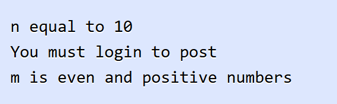

คำสั่ง if
คำสั่ง if เป็นคำสั่งที่ใช้ควบคุมการทำงานของโปรแกรมที่เป็นพื้นฐานและง่ายที่สุด เราใช้คำสั่ง if เพื่อสร้างเงื่อนไขให้โปรแกรมทำงานตามที่เราต้องการเมื่อเงื่อนไขนั้นตรงกับที่เรากำหนด เช่น การตรวจสอบค่าในตัวแปรกับตัวดำเนินการประเภทต่างๆ นี่เป็นรูปแบบของการใช้งานคำสั่ง if ในภาษา Python
ในตัวอย่าง เป็นรูปแบบของการใช้งานคำสั่ง if และ expression เป็นเงื่อนไขที่สร้างจากตัวดำเนินการประเภทต่างๆ ที่เป็น boolean expression โดยโปรแกรมจะทำงานในบล็อคคำสั่ง if ถ้าหากเงื่อนไขเป็น True ไม่เช่นนั้นโปรแกรมจะข้ามการทำงานไป ในบล็อคของคำสั่ง if จะประกอบไปด้วยคำสั่งการทำงานของโปรแกรม คำสั่งทั้งหมดในบล็อคต้องมีระยะเว้นช่องว่างที่เท่ากัน ต่อไปมาดูตัวอย่างการใช้งานคำสั่ง if ในภาษา Python

ในตัวอย่าง เป็นการใช้งานคำสั่ง if เพื่อกำหนดให้โปรแกรมทำงานตามเงื่อนไขต่างๆ ในบล็อคแรกเป็นการตรวจสอบค่าในตัวแปร n ว่าเท่ากับ 10 หรือไม่ เนื่องจากค่าในตัวแปรนั้นเท่ากับ 10 ทำให้เงื่อนเป็นจริง และโปรแกรมทำงานในบล็อคของคำสั่ง if และต่อมาเรามีตัวแปร boolean logged_in เก็บค่าสถานะการเข้าสู่ระบบ เราได้ทำการตรวจสอบโดยการใช้ตัวดำเนินการ not สำหรับตรวจสอบว่าถ้าหากผู้ใช้ไม่เข้าสู่ระบบ จะแสดงข้อความบอกว่าต้องเข้าระบบก่อนที่จะใช้งาน
ต่อมาเป็นการตรวจสอบค่าในตัวแปร m ว่าเป็นทั้งจำนวนเต็มบวกและจำนวนคู่หรือไม่ เราได้ใช้ตัวดำเนินการ and เพื่อเชื่อม expression ย่อยทั้งสอง และเงื่อนไขเป็นจริงทำให้ในบล็อคคำสั่ง if ทำงาน สุดท้ายเป็นเปรียบเทียบค่าของตัวเลข เราได้เปรียบว่า 3 มากกว่า 10 หรือไม่ เนื่องจากเงื่อนไขเป็น False ทำให้โปรแกรมข้ามการทำงานบล็อคนี้ไป
นี่เป็นผลลัพธ์การทำงานของโปรแกรม คุณจะเห็นว่าในสามบล็อคแรกของคำสั่ง if นั้นทำงานเพราะว่าเงื่อนไขเป็นจริงหรือ True และในบล็อคสุดท้ายไม่ทำงานเพราะเงื่อนไขไม่เป็นจริงหรือ False